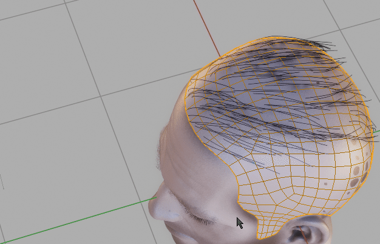
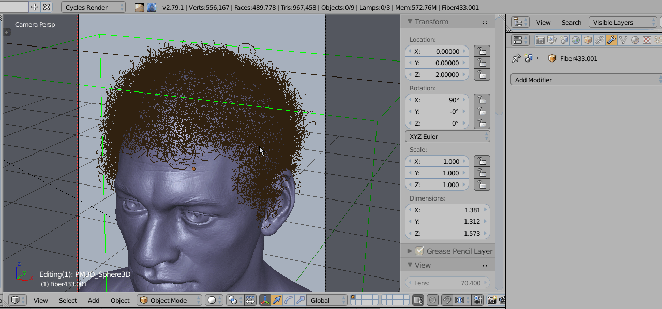

Convert / Generate operations¶
User can convert:
- Particle Hair to curves,
- Curves to Particle Hair,
- Curve ribbons to Mesh ribbons or back.
- Hair System to mesh haircards
You can also generate:
Curve ribbons to mesh ribbons¶
Ribbon to Curves/ Curves to Ribbon - allow for switching between curve ribbons and mesh ribbons. Usually you will do the hair modeling in curve mode, and then, on export, convert them to mesh. This operator ensures that curves UVs are properly converted to mesh UVs.
Finalize Hair¶
When you want to export your character with hair usually you would have to:
- Convert curve hair to mesh hair
- Join mesh hair with character body (it is destructive operation, so usually you would create copies each object before joining the duplicates)
- finally export merged-duplicated object
Finalize Hair is doing all of above (except exporting) in one step. Just select curve hair (or mesh hair), your character object an run 'Finalize hair' to get merged copy that is ready to export. You can remove exported duplicated object after that.
Particle Hairs to Curve¶
 Particle Hairs to Curve - generate curve ribbons from Particle hair. Align their tilt to head with 'Align Tilt' checkbox, and embed hair roots deeper into the scull using 'Embed Roots' parameter.
Particle Hairs From Curve¶
 Particle Hair from Curves (this can be used to convert zbrush fibermesh to blender Particle Hair system). Select curves and target mesh (that will receive Particle Hair) and use 'Particle Hair from Curves' to convert curves object to blenders Hair system.
Generate Braids¶
To generate Braids - select one or more splines from curve object, and run 'Generate Braid'. You can access operator properties from F9 hotkey. After finishing operation, originally selected splines will be separated - each into its own object, and they will deform the generated braid. This way you will be able to twist (ctrl +T), scale radius (alt+s) or move generated braids.
Note: If you want to adjust braid later on - just re-run braid operator, while having braid object selected.
Parameters: (F9 Key)
- Points per interlace - Amount of points per braid interlace.
- Length - braid length multiplier (actual length is calculated from selected spline length)
- Frequency - Frequency describes how many times hair strand interlacing will occur
- Main Radius - Overall braid radius
- Strand Radius - Individual strands radius
- Radius falloff - Change braid size over strand length (tapers the braid on the tip)
- Equalize radii - Equalize radii for braids with different lengths (when generating multiple braids)
Generate Curly hair¶
To generate Curls - select one or more splines from curve object, and run 'Generate Curls'. You can access operator properties from F9 hotkey. After finishing operation, originally selected splines will be separated - each into its own object, and they will deform the generated braid.
Parameters: (F9 Key)
- Points per cycle - Amount of points per curl cycle. Bigger values gives smoother curls
- Curl frequency - Will generate more curls but also higher point count
- Radius - Curls Radius
- Uniform spacing - Distribute stand points uniformly along strand length
- Adjust Tilt - Make curve profile face outwards direction. It is bit slow - usually it is best to enable it at last step
- Transition Contrast - Curls transition contrast along strand length
- Offset - Offset curls more toward the root or tip
- Gravity - Gravity weight pulls the curls down along the hair strand. 0 - disabled, 0.5 - natural gravity pull
- Random direction - Flip curls direction randomly from clockwise to counter-clockwise
- Randomize frequency - Randomize frequency